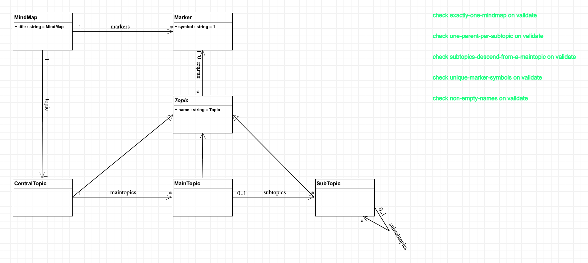
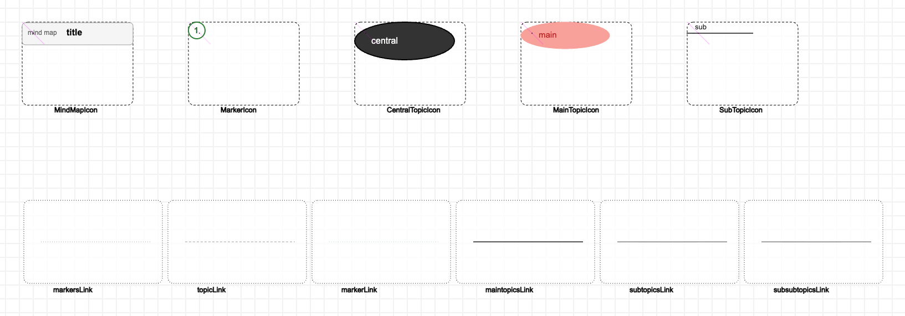
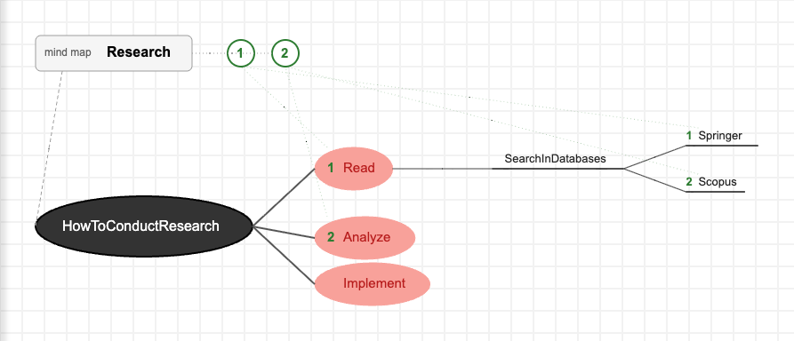
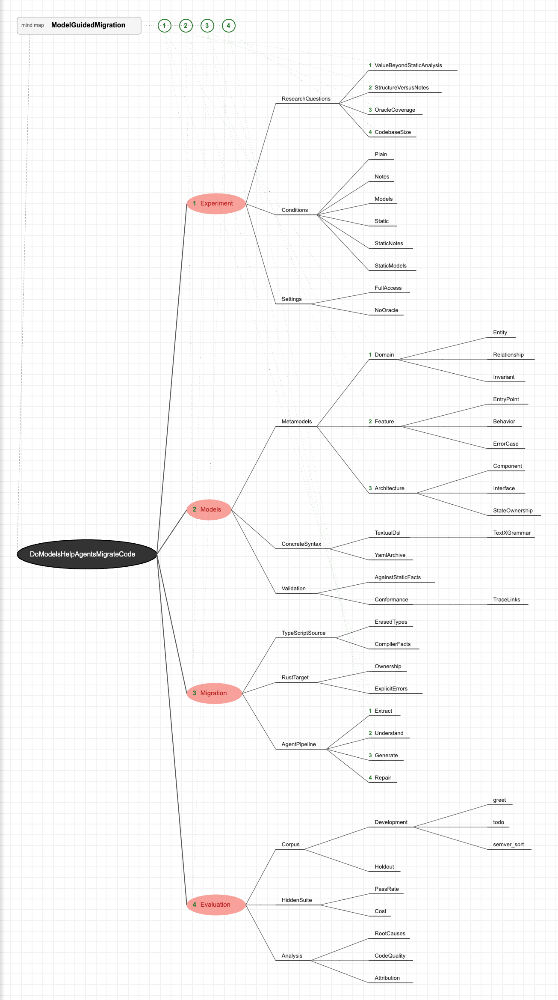

Name: Travis Holt
Matricule (last 4 digits): XXXX
Email: travis.holt@umontreal.ca
Time spent: XX h
MindMap (title) containing
Markers (symbol) and exactly one CentralTopic; an abstract Topic (name,
optional marker) specialized by CentralTopic → MainTopic →
SubTopic → SubTopic... Both environments implement this same metamodel.The metamodel is written as an Ecore file, MindMap.ecore
(with its MindMap.genmodel), and the grammar is mapped onto it
with import. I chose this over letting Xtext infer the metamodel from the grammar because inference
cannot produce two parts of the assignment's metamodel: an abstract Topic, and the
[1..1] lower bound of MindMap.topic (inferred features are always optional). The MWE2 workflow
(GenerateMindMap.mwe2) generates the EMF
code from the genmodel, then the Xtext infrastructure.
| Class | Features |
|---|---|
| MindMap | title: EString [1]; markers: Marker [0..*] (containment); topic: CentralTopic [1..1] (containment) |
| Marker | symbol: EString [1] |
| Topic (abstract) | name: EString [1]; marker: Marker [0..1] |
| CentralTopic | maintopics: MainTopic [0..*] (containment) |
| MainTopic | subtopics: SubTopic [0..*] (containment) |
| SubTopic | subsubtopics: SubTopic [0..*] (containment) |
MindMap.xtext follows the syntax of the
assignment's example. Each level has its own bullet (topic, *, -), so the
parser itself enforces the containment hierarchy: there is exactly one central topic, a main topic can only appear
directly under it, and a * under a sub-topic is a syntax error.
MindMap:
'mindmap' title=ID ('(' markers+=Marker (',' markers+=Marker)* ')')?
topic=CentralTopic;
Marker:
'marker' symbol=Symbol;
Symbol returns ecore::EString:
INT;
CentralTopic:
'topic' (marker=[Marker|Symbol])? name=ID
('includes' '{' maintopics+=MainTopic* '}')?;
MainTopic:
'*' (marker=[Marker|Symbol])? name=ID
('includes' '{' subtopics+=SubTopic* '}')?;
SubTopic:
'-' (marker=[Marker|Symbol])? name=ID
('includes' '{' subsubtopics+=SubTopic* '}')?;
Hand-written code beside the generated projects:
* 1 Read resolve 1 to the marker.[Screenshot: research.mindmap open in the runtime Eclipse, with its outline]
My course project asks whether explicit models (domain, feature and architecture models) help a coding agent migrate a TypeScript program to Rust, beyond static analysis and beyond unstructured notes. The mind map, courseProject.mindmap, organizes its ideas under four main topics, ordered by markers 1 to 4: the experiment, the models, the migration and the evaluation. Markers also order the research questions, the three metamodels and the pipeline stages. Every main topic has at least 3 levels (e.g. Models > Metamodels > Domain > Entity); a unit test checks it.
mindmap ModelGuidedMigration (marker 1, marker 2, marker 3, marker 4)
topic DoModelsHelpAgentsMigrateCode includes {
* 1 Experiment includes {
- ResearchQuestions includes {
- 1 ValueBeyondStaticAnalysis
- 2 StructureVersusNotes
...
* 2 Models includes {
- Metamodels includes {
- 1 Domain includes {
- Entity
...
The assignment's example is also included: research.mindmap.
[Screenshot: courseProject.mindmap open in the runtime Eclipse]
The class diagram MindMap.model, compiled to
MindMap.metamodel, is the same metamodel:
Topic is abstract (AToMPM adds its noAbstractInstances constraint), and
CentralTopic, MainTopic and SubTopic inherit its name and its marker
association.

AToMPM's containment link type nests the contained icons inside their container, which does not suit a
mind map drawn as a tree. The containments are therefore associations whose cardinalities give them containment
semantics: each Marker belongs to exactly one map (markers in: 1..1), each
CentralTopic to exactly one map (topic in: 1..1, and the map has exactly one, out: 1..1),
each MainTopic to exactly one central topic (maintopics in: 1..1), and a topic has at most
one marker (marker out: 0..1). Global constraints cover what cardinalities cannot say:
| Constraint | Rule |
|---|---|
| exactly-one-mindmap | A model is one mind map. |
| one-parent-per-subtopic | A sub-topic is in exactly one subtopics or subsubtopics (it can have either kind of parent, but only one). |
| subtopics-descend-from-a-maintopic | Following parents from a sub-topic reaches a main topic (no cycles of sub-topics). |
| unique-marker-symbols | Two markers cannot share a symbol. |
| non-empty-names | Every topic has a name. |
A test script (test_formalism.mjs) builds a valid map and then one violation of each rule (second map, orphan main topic, orphan central topic, orphan sub-topic, sub-topic with two parents, cycle, duplicate marker, marker outside the map, empty name); validation accepts the first and rejects all nine.
The icon model MindMap.defaultIcons.model,
compiled to MindMap.defaultIcons.metamodel,
follows the assignment's figure: a dark ellipse for the central topic, light red ellipses for main topics, underlined
text for sub-topics, and a marker shown as a green number in front of the topic's name. Each topic's mapper reads its
marker through the marker link and sizes its shape to its name. The map is a title box, with its markers
as a small legend of green circles; links to the markers are drawn faintly so the tree stays readable.

The assignment's example, research.model:

courseProject.model is the same mind map as in task 2. It passes validation.

Both AToMPM models were created in the generated editor from the textual files by a script (build_samples.mjs) that drives AToMPM's own web client, then validated, saved, and compared topic by topic (type, parent, marker) with the text. The formalism is built the same way (build_formalism.mjs), so it can be rebuilt from scratch.
[Rewrite in your own words; draft from my hw1 notes:]
With Xtext, the grammar and the metamodel are two views of the same language, and the tooling around them (editor, outline, linking, validation) comes almost for free. Being able to write unit tests on parsing made learning the grammar language incremental, and enforcing the hierarchy in the grammar itself was natural. Eclipse and its idiosyncrasies were the main obstacle. AToMPM makes the graphical side possible without writing a renderer, and mappers are a powerful idea, but the editor was unintuitive and fragile: building and rebuilding the formalism by hand was slow enough that I scripted it through AToMPM's client. Containment does not fit a tree drawing, so its semantics moved into cardinalities and constraints.
This redux was produced with Claude Code (Anthropic): the Ecore, grammar, validator, tests, AToMPM build scripts, sample models and this report. Attach the university's declaration form as required.